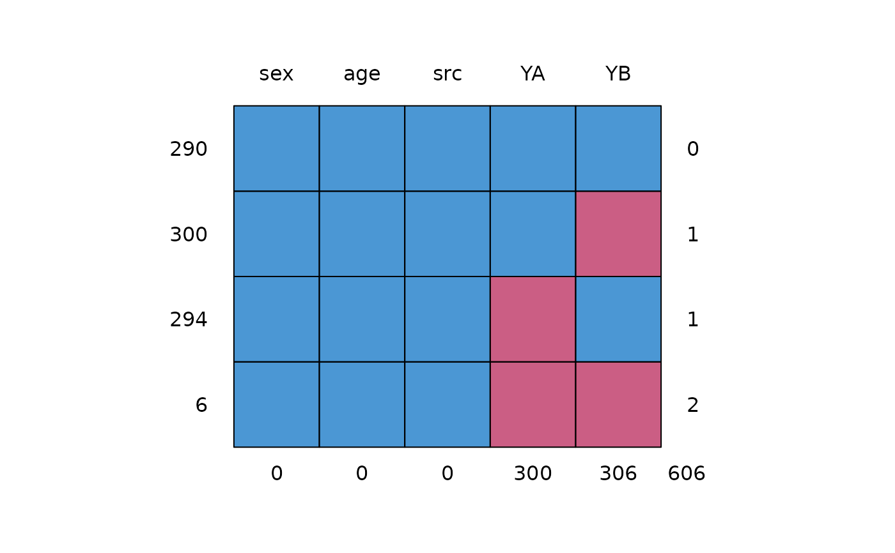

Two items YA and YB measuring walking disability in samples A, B and E.
Format
A data frame with 890 rows on the following 5 variables:
- sex
Sex of respondent (factor)
- age
Age of respondent
- YA
Item administered in samples A and E (factor)
- YB
Item administered in samples B and E (factor)
- src
Source: Sample A, B or E (factor)
Details
Example dataset to demonstrate imputation of two items (YA and YB). Item YA is administered to sample A and sample E, item YB is administered to sample B and sample E, so sample E acts as a bridge study. Imputation using a bridge study is better than simple equating or than imputation under independence.
Item YA corresponds to the HAQ8 item, and item YB corresponds to the GAR9 items from Van Buuren et al (2005). Sample E (as well as sample B) is the Euridiss study (n=292), sample A is the ERGOPLUS study (n=306).
See Van Buuren (2018) section 9.4 for more details on the imputation methodology.
References
van Buuren, S., Eyres, S., Tennant, A., Hopman-Rock, M. (2005). Improving comparability of existing data by Response Conversion. Journal of Official Statistics, 21(1), 53-72.
Van Buuren, S. (2018). Flexible Imputation of Missing Data. Second Edition. Chapman & Hall/CRC. Boca Raton, FL.
Examples
md.pattern(walking)

#> sex age src YA YB
#> 290 1 1 1 1 1 0
#> 300 1 1 1 1 0 1
#> 294 1 1 1 0 1 1
#> 6 1 1 1 0 0 2
#> 0 0 0 300 306 606
micemill <- function(n) {
for (i in 1:n) {
imp <<- mice.mids(imp) # global assignment
cors <- with(imp, cor(as.numeric(YA),
as.numeric(YB),
method = "kendall"
))
tau <<- rbind(tau, getfit(cors, s = TRUE)) # global assignment
}
}
plotit <- function() {
matplot(
x = 1:nrow(tau), y = tau,
ylab = expression(paste("Kendall's ", tau)),
xlab = "Iteration", type = "l", lwd = 1,
lty = 1:10, col = "black"
)
}
tau <- NULL
imp <- mice(walking, max = 0, m = 10, seed = 92786)
pred <- imp$pred
pred[, c("src", "age", "sex")] <- 0
imp <- mice(walking, max = 0, m = 3, seed = 92786, pred = pred)
micemill(5)
#>
#> iter imp variable
#> 1 1 YA YB
#> 1 2 YA YB
#> 1 3 YA YB
#>
#> iter imp variable
#> 2 1 YA YB
#> 2 2 YA YB
#> 2 3 YA YB
#>
#> iter imp variable
#> 3 1 YA YB
#> 3 2 YA YB
#> 3 3 YA YB
#>
#> iter imp variable
#> 4 1 YA YB
#> 4 2 YA YB
#> 4 3 YA YB
#>
#> iter imp variable
#> 5 1 YA YB
#> 5 2 YA YB
#> 5 3 YA YB
plotit()
### to get figure 9.8 van Buuren (2018) use m=10 and micemill(20)